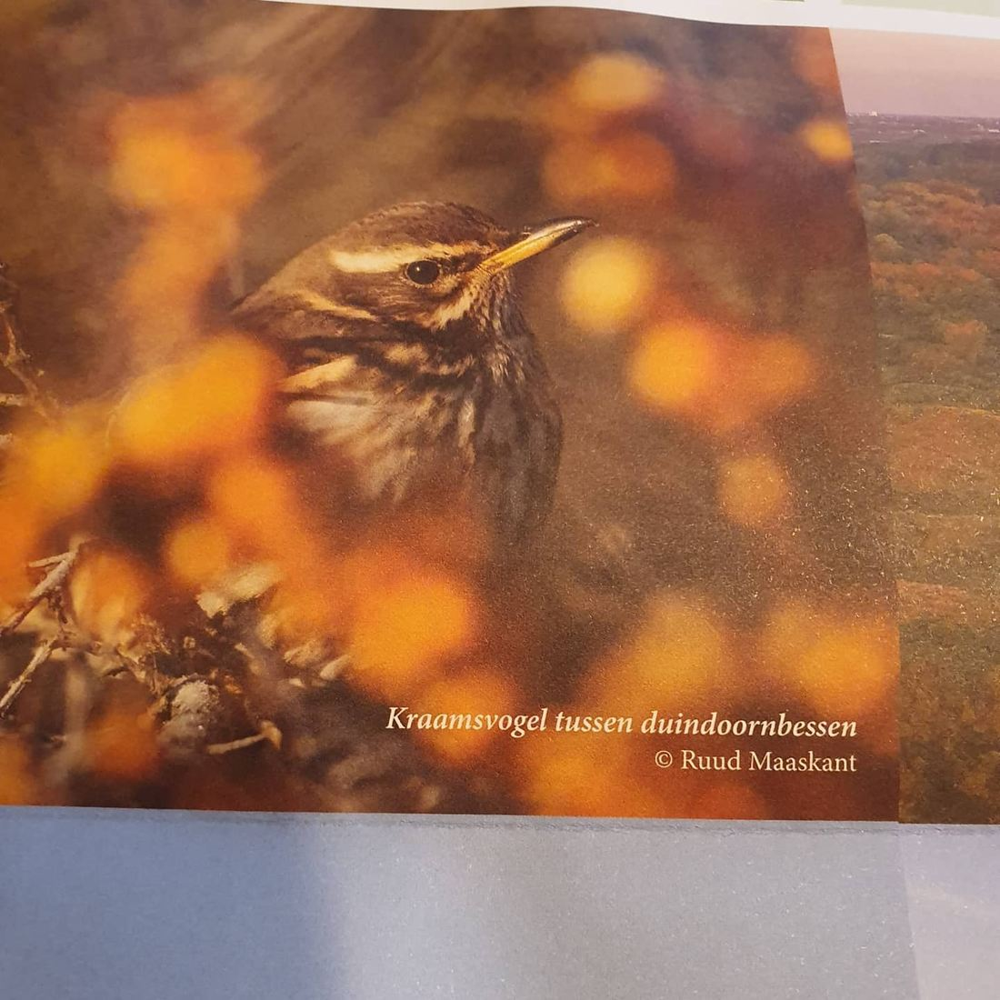
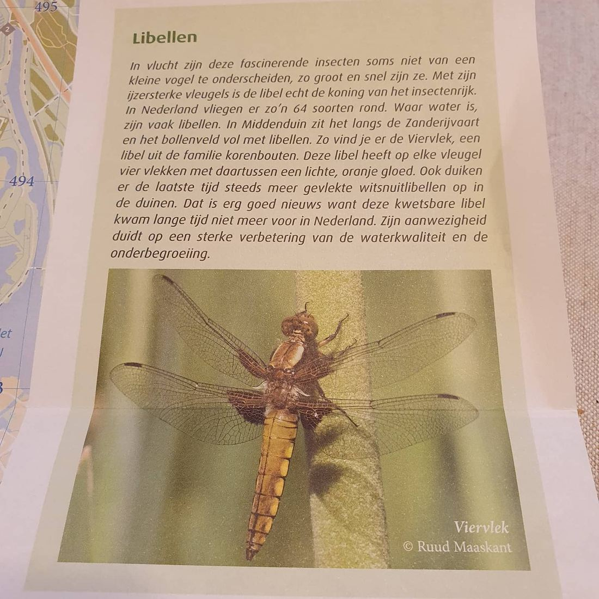
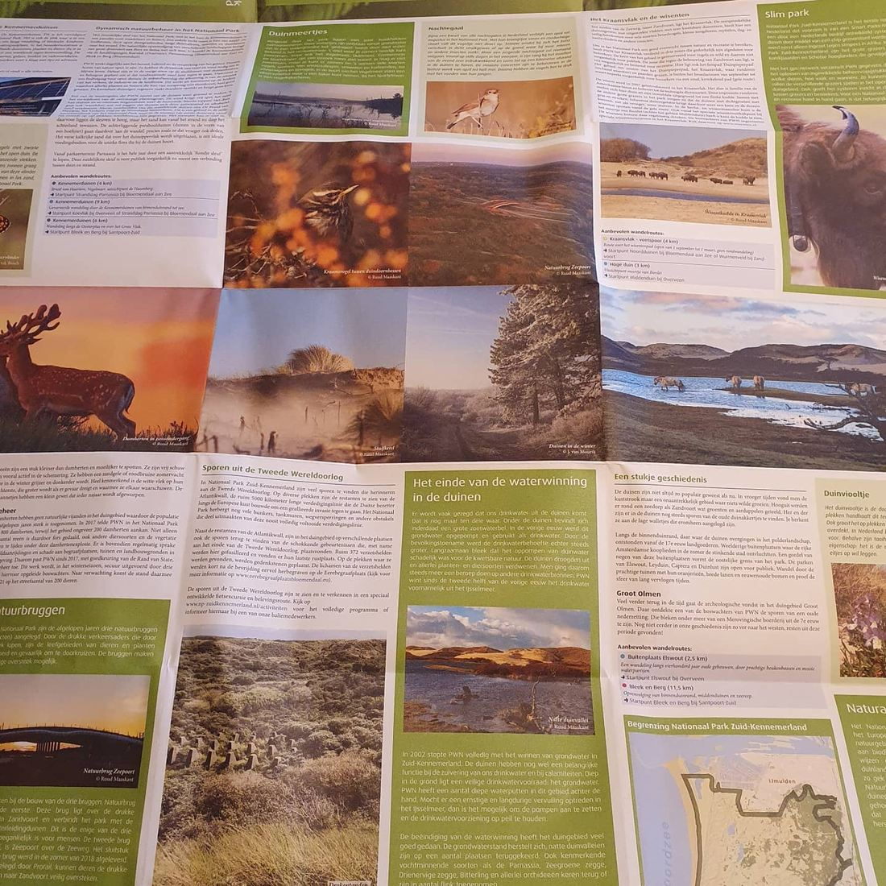
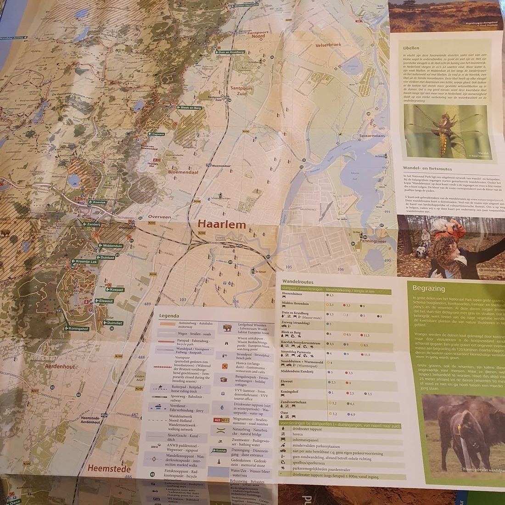

Koperwiek en platbuik op de natuurkalender
7 november 2020 · PWN, Nationaal Park Zuid-Kennemerland
- Op de foto
- Koperwiek en vrouwtje platbuik
- Het ging over
- Kramsvogel en viervlek




Beste @pwnwaternatuur en @nationaalparkzuidkennemerland. Een prachtige kaart van februari 2020, maar toch helaas niet één maar twee natuurfoutjes.
1. De "Kra(a)msvogel" moet natuurlijk een Koperwiek zijn.
2. De Viervlek is een vrouw Platbuik.
Snel herdrukken? 😉